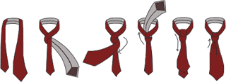
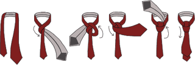
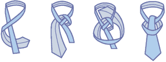
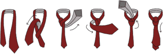
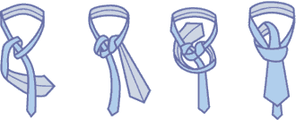
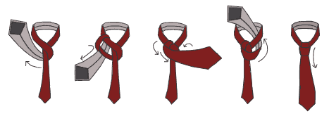
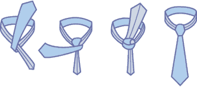

|
Простой или узел "Four-in-Hand" ("Фор-ин-хэнд") - подходит для тех, кто только учится завязывать галстук. Универсальный или узел "Half Windsor" ("половинный виндзор") - самый универсальный и популярный. Подходит для шелковых галстуков традиционной ширины, широких плотных и узких галстуков.  Двойной или узел "Windsor" ("виндзор") - этот элегантный узел завязывают также, как "Half Windsor", добавляя еще один виток со стороны правого уголка воротника. Используя галстуки разной ширины или меняя положение узкого и широкого концов галстука, можно добиться необходимого размера узла.  Крестовый или узел "Christensen" ("кристенсен") идеально подходит для высоких, в 4-4,5 см, воротников сорочек. Он особенно хорош для "пухлых" кашемировых или шерстяных галстуков из зимних коллекций.  Мы называем его по-разному - квадратный, двойной, итальянский. Его западное название Christensen. К этому несложному узлу долго привыкали в России. Сейчас узел "Кристенсен" актуален, как никогда, потому что идеально подходит для модных высоких (в 4-4,5 см.) воротников сорочек. Этот узел особенно хорош для "пухлых" кашемировых или шерстяных галстуков из зимних коллекций. Он начинается как Half Windsor, а завершается двойным витком спереди Узел "Пратт"  Во-первых, однотонный , того цвета, который более всего подходит ко всем вашим костюмам. Учтите, что галстук красного цвета не только прекрасного освежает, но и считается признаком успеха и власти. Однотонный галстук может подчеркнуть удачное соответствие цветов костюма и рубашки. Единственная опасность однотонного галстука - скука. Так что не увлекайтесь им. Во-вторых, не обойтись также и без галстука с повторяющимся узором . Ему можно отдать предпочтение, даже отправляясь на ответственные переговоры. Конечно, в том случае, если в качестве основного компонента узора не выступает плюшевый мишка или голая красотка. Полосатый галстук говорит о серьезных намерениях. Галстук с диагональной полоской, выдержанной в традиционных цветовых сочетаниях, подойдет вам лишь в том случае, если вы надели его под однотонный костюм и рубашку без рисунка. Галстук в горошек тем более универсален, чем меньше диаметр горошин, его украшающих. Горошек, более напоминающий точку, вполне сгодится для официальных мероприятий. Разумеется, чем крупнее горох, тем выразительнее галстук, но тем больше и опасность выглядеть несколько по-клоунски. Клубный галстук расскажет всему миру о ваших пристрастиях, проще говоря - о хобби. Крохотные дядечки, размахивающие клюшками для игры в гольф или теннисными ракетками, маленькие яхточки, несущиеся по волнам, или самолетики, рассекающие облака, наверняка смогут расположить к вам людей со столь же достойными увлечениями.
|